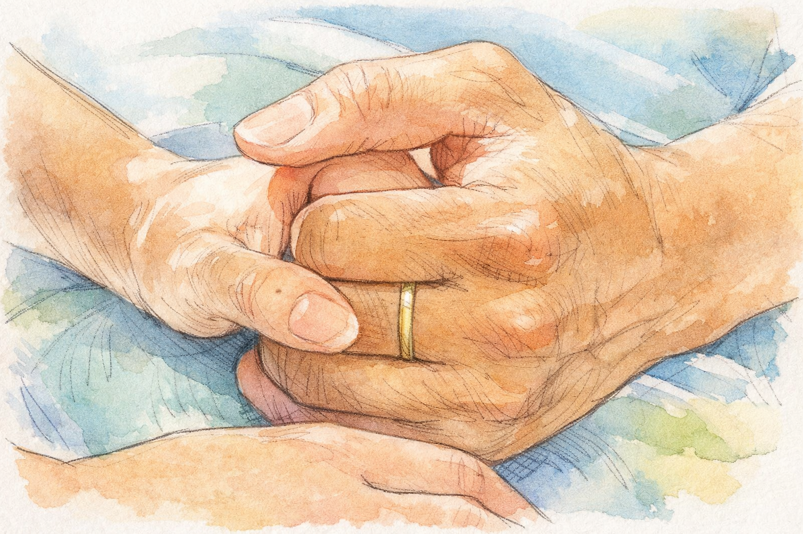
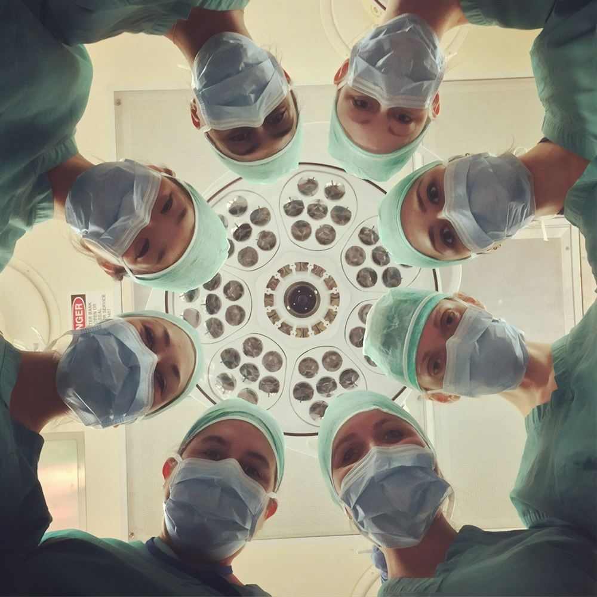

병원 내부 기록 자료, 상담 내용, 운영 문서, 각종 안내문과 보고 문서까지 외부 노출 없이 안전하게 처리할 수 있는 병원 전용 AI 솔루션입니다. 반복적인 문서 업무를 줄이고 처리 속도를 높여, 병원 운영 효율을 한 단계 끌어올릴 수 있습니다.
병원 내부 서버 중심으로 운영하여 민감한 정보 보호에 유리한 환경을 구성할 수 있습니다.
상담 기록, 내부 보고, 운영 문서 초안 작성 등 반복되는 문서 업무를 효율화합니다.
필요한 정보를 빠르게 찾고 정리해 실무자의 업무 시간을 크게 줄일 수 있습니다.
내부 서버와 시스템 환경까지 포함한 4,000만원 구축 패키지로 제안 가능합니다.
내부 자료는 많지만 활용은 어렵고, 상담 내용과 기록은 계속 쌓이며, 민감한 정보 때문에 외부 AI를 자유롭게 사용하기 어려운 것이 병원 현장의 현실입니다.
부서별 문서가 흩어져 있어 필요한 정보를 찾는 데 시간이 오래 걸립니다.
상담 내용과 운영 기록을 사람이 직접 정리하다 보니 누락과 편차가 생길 수 있습니다.
문서 검색, 요약, 작성까지 수작업이 많아 전체 업무 흐름이 느려집니다.
민감한 병원 데이터를 외부 서비스에 올리기 어려워 AI 도입이 제한됩니다.
병원 내부 문서를 기반으로 검색·요약·초안 작성·상담 기록 정리까지 지원하고, 외부 노출 없이 내부에서 안정적으로 운영할 수 있도록 구성합니다.
필요한 자료를 빠르게 찾아 핵심 내용을 정리해 업무 판단 속도를 높입니다.
상담 내용을 정리해 메모 부담을 줄이고 기록 품질을 일정하게 유지할 수 있습니다.
안내문, 보고자료, 운영 문서 등의 초안을 빠르게 생성해 작성 시간을 줄여줍니다.
내부 서버 기반 운영으로 외부 공개형 AI보다 데이터 통제력이 높습니다.
병원 실무에 직접 연결되는 문서·기록·상담 지원 중심으로 설계하여, 도입 효과를 빠르게 체감할 수 있습니다.
반복적인 문서 정리와 기록 초안 작성 시간을 줄여 기존 인력의 효율을 높입니다.
자료 검색과 문서 작성 시간이 단축되어 병원 내부 커뮤니케이션과 대응이 빨라집니다.
외부에 데이터가 노출되지 않는 방향으로 운영해 보안 신뢰도를 강화할 수 있습니다.

단순한 챗봇이 아니라 병원 내부 운영 흐름에 맞는 실무형 AI 도구로 구성할 수 있습니다.
병원 내부 자료 활용과 보안형 AI 운영을 위한 구축 기준 제안입니다.
내부 서버, 기본 세팅, 병원 업무 맞춤형 활용 구조 반영까지 포함한 제안 예시입니다.
간단한 정보만 남겨주시면 병원 규모와 운영 방식에 맞춰 적합한 구축 방향을 안내해드립니다.
병원 내부 문서 환경, 상담 프로세스, 보안 수준, 서버 구성 조건에 따라 적용 범위와 방식이 달라질 수 있습니다. 아래 내용을 중심으로 상담을 진행합니다.

병원에서 오프라인 GPT를 검토할 때 자주 나오는 질문을 정리했습니다.
문서 지옥, 느린 자료 검색, 반복적인 기록 업무를 줄이고 보안까지 고려한 병원 전용 AI 시스템을 도입해보세요. 내부 서버 포함 4,000만원 기준으로 맞춤 상담이 가능합니다.